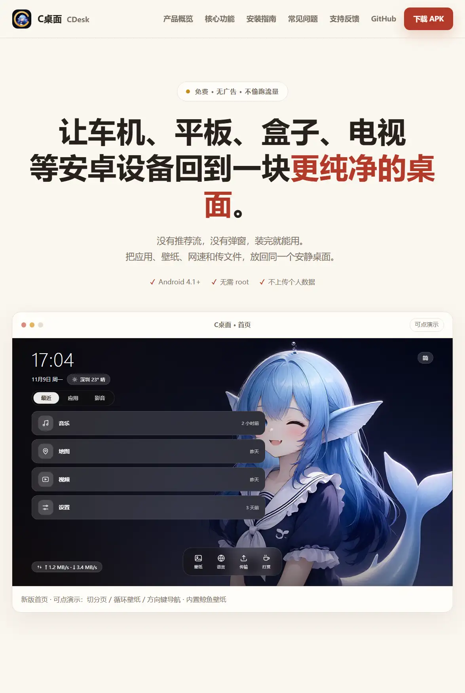

C = Car · Clean · Cheap 给老车机、电视盒子、Android TV 用的一块干净桌面。没有广告，没有推荐流。
官网（国内直连）：https://gcy5.cn.mt —— 功能介绍、安装步骤、常见问题、加群/反馈都在这。

中国有大量 2015–2022 年的车机、电视盒子，硬件还能用，但系统桌面卡、丑、广告多，官方早就不更新了。
C桌面 只做四件事：
| 能力 | 说明 |
|---|---|
| 🖥 替换默认桌面 | 三页桌面（最近 / 应用 / 影音），默认落在「最近」，遥控器方向键翻页 |
| 🌙 壁纸 | 内置 4 张（日光少女 / 鲸夜 / 晨光 / 金色时刻）+ 纯色 + 最多 3 张自定义照片，可开日夜自动（6:00–18:00 用晨光，其余用金色时刻） |
| 📶 实时网速 | 左右下角悬浮显示，纯 TrafficStats 差值采样，零唤醒代价 |
| 📁 局域网传文件 | 内置 HTTP 服务，手机扫码/输地址就能往车机传 APK |
另有：应用内语言切换（简 / 繁 / EN，当前语言高亮显示）、IP 自动定位天气。首次启动零打断——使用须知和设默认桌面引导都收在「设置」里，桌面页不弹窗。
壁纸与更新发布、bug 反馈、功能建议，请到公众号「韭菜超先生」——丢失了 APK 也从这里找回。
也可以直接进 QQ 群「C桌面会员群」（群号 970805386）：https://qm.qq.com/q/aNyk2ZG3ZK —— 安装求助、功能许愿、新版本先发群里。


微信扫码关注「韭菜超先生」
QQ 群 970805386 · 一键加群
可以先去官网 gcy5.cn.mt 看一眼再决定装不装 —— 页面底部有完整下载入口。
最新版见 Releases：
每个版本附 SHA-256 校验值。装不上、下不动，到公众号「韭菜超先生」反馈。
# 需要 JDK 17 + Android SDK
./gradlew assembleDebug
# 产物：app/build/outputs/apk/debug/app-debug.apk
安装后按 Home 键，系统弹出「选择桌面」，选 C桌面 并设为默认。 部分车机固件锁死了 Home 键：从应用列表里点「C桌面」自己那一项，也能唤出选择框。
minSdk 16（Android 4.1）到 targetSdk 34（Android 14+），同一个 APK。每一处版本差异都有分支：
| 坑 | 处理方式 |
|---|---|
| 悬浮窗类型 | SDK >= 26 ? TYPE_APPLICATION_OVERLAY : TYPE_PHONE |
| 前台服务 | SDK >= 26 ? startForegroundService : startService |
| 通知渠道 | SDK >= 26 才创建 NotificationChannel |
PendingIntent 可变性 |
SDK >= 23 加 FLAG_IMMUTABLE（Android 12 强制） |
| 播放器带请求头 | SDK >= 21 用 setVideoURI(uri, headers)，更低版本退回无头重载 |
JSONArray.remove |
不用它，改为边拷贝边限长（remove(int) 是 API 19） |
| 主题 | values/ 用 Theme.NoTitleBar.Fullscreen，values-v21/ 才用 Material |
| 应用可见性 | manifest 声明 <queries>，Android 11+ 也能列出应用 |
| 无触摸屏 | <uses-feature touchscreen required="false">，车机/TV 才装得上 |
以上每一条都有对应测试守着：.github/workflows/test.yml 里 Robolectric 全组件启动冒烟 + lint NewApi / UnspecifiedImmutableFlag 两个检查。
4K 壁纸解码带 inSampleSize 安全阀：4K 电视吃全图，1080p 老屏自动降采样，防 OOM。
纯色模式下可在几组配色间循环；壁纸模式下文字按壁纸明暗自动反色。 网速悬浮窗颜色同样按壁纸亮度自动黑/白。
车里没有 USB、没有文件管理器的时候：
手机和车机连同一个 Wi-Fi
→ 车机上打开「局域网传输」
→ 屏幕显示二维码和 http://192.168.x.x:8080
→ 手机扫码或输地址
→ 选文件，点发送
纯 ServerSocket 实现，端口按 8080/8081/8088/8888/9090 依次找空位。
app/src/main/
├── java/com/c/launcher/
│ ├── MainActivity.java 桌面主界面：时钟 / 三页 / 壁纸 / Dock
│ ├── AppAdapter.java 已安装应用列表（D-pad 可导航）
│ ├── MediaAdapter.java 影音页入口卡片（直播 / 点播 / 音乐 / 书库）
│ ├── BaseShellActivity.java 三个壳的公共链路：导入 → 解析 → 列表 → 点击
│ ├── LiveShellActivity.java 直播播放（M3U / TXT#genre# / JSON）
│ ├── VodShellActivity.java 点播播放（苹果CMS 采集接口）
│ ├── MusicShellActivity.java 音乐播放（M3U / TXT / JSON 歌单）
│ ├── PlayerActivity.java 播放器：倍速 / 进度 / 换 UA / 断流重连
│ ├── LibraryActivity.java 收藏 + 最近播放
│ ├── PlaylistParser.java 播放列表解析（不依赖第三方库）
│ ├── SourceApi.java 苹果CMS 接口客户端
│ ├── TvBoxConfig.java TVBox 配置解析（只认结构，不含源）
│ ├── History.java / Favorites.java 最近播放与收藏（JSON 持久化）
│ ├── ContentFilter.java 标题关键词过滤（设置里可关）
│ ├── WPManager.java 内置壁纸 + 日夜自动 + 按屏解码
│ ├── CustomWallpapers.java 自定义图片壁纸（最多 3 张，私有目录）
│ ├── WallpaperSettingsActivity.java 壁纸选择（缩略图卡片）
│ ├── ThemeManager.java 配色兜底 + 文字/背景颜色动画
│ ├── AutoContrast.java 壁纸亮度采样 → 自动黑白
│ ├── LangManager.java 应用内简/繁/EN 切换
│ ├── WeatherManager.java IP 定位天气（ipwho.is + open-meteo）
│ ├── SpeedService.java 前台服务，每秒采样 TrafficStats
│ ├── SpeedOverlay.java 左右下角网速悬浮胶囊（自动黑白）
│ ├── TransferActivity.java 局域网 HTTP 文件接收 + 二维码
│ ├── SetupActivity.java 设默认桌面引导（设置页入口）
│ ├── GuardianActivity.java 状态体检页（桌面/权限/网络是否就位）
│ ├── SettingsActivity.java 设置：更新 / 诊断 / 过滤开关 / 使用须知
│ ├── DisclaimerActivity.java 使用须知（设置页入口，首启不弹）
│ ├── UpdateChecker.java GitHub Releases 更新检查
│ ├── CrashActivity.java 崩溃兜底页（复制日志发给作者）
│ ├── CLog.java 环形日志 + 诊断报告
│ └── Screen.java 全屏 + 刘海规避 + 系统栏隐藏
├── assets/transfer.html 手机端上传页面
└── res/ 四语文案（简/繁台/繁港/EN）+ 布局
.github/workflows/test.yml：PR 与 beta 推送自动跑两件事——
NewApi + UnspecifiedImmutableFlag：把 minSdk 16 之下的 API 误用挡在合并前如果这个项目让你的老车机多活了几年，欢迎打赏。打赏不解锁任何功能，所有功能永远免费。

打赏不解锁任何功能；打赏码就是一张静态图片，不接任何支付 SDK。
一、作品性质。 本应用系个人开发者独立完成的免费工具，按「现状」提供，不作任何明示或默示的担保，包括但不限于适销性、特定用途适用性及不侵权之担保。使用本应用的风险由使用者自行承担；在法律允许的最大范围内，作者不对因使用或无法使用本应用而产生的任何直接、间接、附带、特殊或后果性损失承担责任。
二、内容与播放器。 本应用不内置、不分发任何内容；影音页仅为播放器入口，所播内容由使用者自行导入并自行负责，请遵守所在地法律法规。
三、第三方名称。 本应用与任何内容平台、版权方、设备厂商均无隶属、授权或合作关系；所涉商标、名称归其各自权利人所有。
四、源码与许可。 源码公开于本仓库，以 CC BY-NC-ND 4.0 授权；APK 不收费、不接入任何支付 SDK。
本项目是个人作品，由大模型与云端平台技术驱动，开发分三个阶段协作完成。
一、起步与经典主题 · DeepSeek
C桌面 的构建始于 DeepSeek：项目骨架、核心架构，以及包括「鲸鱼」在内的一系列经典主题， 均在 DeepSeek 辅助下完成。这些经典主题作为产品视觉的底色被完整保留，随版本演进持续沿用。
二、当前界面 · 千问4
现在这套界面 UI 由 千问4 重写，功能与经典主题保持衔接，视觉风格在此阶段完成统一。
三、后续迭代 · 云端协作
后续的代码完成与持续开发，由云端的 MonkeyCode 与 讯飞星辰 MaaS 平台 协同支撑， 用于代码生成、审查与多轮迭代。
想体验同款开发流程，可用邀请码注册： https://monkeycode-ai.com/?ic=01a05d37-4257-73f8-9552-92b1e62b7f41
产品判断、取舍与发布由作者本人负责。上述平台均为开发辅助工具，本应用不是其官方产品， 也未获得其背书或联合署名。
| 项 | 说明 |
|---|---|
| 起步构建 | DeepSeek（项目骨架与经典主题，含鲸鱼） |
| 界面 UI | 千问4（当前界面重写） |
| 云端协作 | MonkeyCode · 讯飞星辰 MaaS 平台（后续代码完成与迭代） |
| 壁纸 / UI | 壁纸 UI 全由 AI 生成，4K 可到「韭菜超先生」领取 |
| 配色参考 | Tailwind CSS v4 官方调色板（MIT），色值经 OKLab 转换为 sRGB |
| 二维码 | ZXing core（Apache 2.0），纯 Java，无 native 库 |